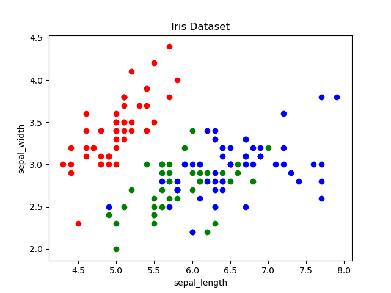
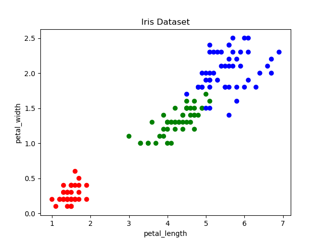

https://docs.python.org/3/library/csv.html
PEP 305 - CSV File API
https://docs.python.org/3/library/functions.html#open
The CSV (Comma Separated Values) format is the most common import and export format for spreadsheets and databases. The format is not formally defined by a stable specification and is subtle enough that parsing lines of a CSV file with something like line.split(",") is eventually bound to fail.
The 'csv' module implements classes to read and write tabular data in CSV format. The most important are two functions: csv.reader() and csv.writer().
Each row read from the csv file is returned as a list of strings.
import csv csv.list_dialects() # ['excel', 'excel-tab', 'unix'] csv.field_size_limit() # 131072 # the current maximum field size allowed by the parser
https://docs.python.org/3/glossary.html Universal newlines A manner of interpreting text streams in which all of the following are recognized as ending a line: the Unix end-of-line convention '\n', the Windows convention '\r\n', and the old Macintosh convention '\r'.
# csv.reader(csvfile, dialect='excel', **fmtparams)
# csvfile : objects which support the iterator protocol (file objects, list objects)
#with open('spam.csv', 'r') as infile: # Py2
#with open('spam.csv', 'r', newline='') as infile: # Py3, the default system encoding
with open('spam.csv', 'r', newline='', encoding='utf-8') as infile: # Py3
# newline='' : line endings are returned untranslated
#spam_reader = csv.reader(infile)
# default dialect='excel'
# default delimiter=','
#spam_reader = csv.reader(infile, delimiter=':') # /etc/passwd, /etc/group
spam_reader = csv.reader(infile, delimiter=' ')
for row in spam_reader:
print(row) # ['item1', 'item2', ...] a list of strings
# Parsing strings.
for row in csv.reader(['one,two,three']):
print(row) # ['one', 'two', 'three'] one row
# csv.writer(csvfile, dialect='excel', **fmtparams)
# csvfile : any object with a write() method
fields = ['Index', 'Letter']
rows = list(zip(range(10), "abcdefghij"))
print(rows)
# [(0, 'a'), (1, 'b'), (2, 'c'), (3, 'd'), (4, 'e'),
# (5, 'f'), (6, 'g'), (7, 'h'), (8, 'i'), (9, 'j')]
#with open(file_name, 'w') as outfile: # Py2
#with open(file_name, 'w', newline='') as outfile: # Py3, the default system encoding
with open(file_name, 'w', newline='', encoding='utf-8') as outfile: # Py3
#spam_writer = csv.writer(outfile)
# default dialect='excel'
# default lineterminator="\r\n"
# default delimiter=","
#spam_writer = csv.writer(outfile, delimiter="\t")
spam_writer = csv.writer(outfile, delimiter=" ", lineterminator="\n") # unix
#spam_writer.writerow(fields) # optional fields
#spam_writer.writerows(rows) # all rows at once
for row in rows:
spam_writer.writerow(row)
import numpy as np # Read CSV and make np.array. data = np.loadtxt(file_name, delimiter=",") # default dtype=float
# Write np.array to CSV. np.savetxt(file_name, data, delimiter=",")
import pandas as pd # Read CSV and make DataFrame. df = pd.read_csv(file_name, sep=",", encoding="utf-8", names=None) df.info() # numbers and strings are recognized
# Write DataFrame to CSV. df.to_csv(file_name, index=False, encoding="utf-8")
https://towardsdatascience.com/introduction-to-data-visualization-in-python-89a54c97fbed
# https://archive.ics.uci.edu/ml/datasets/iris
# Machine Learning Repository. Iris Data Set.
#
# The data set contains 3 classes of 50 instances each, where each class
# refers to a type of iris plant. One class is linearly separable from
# the other 2; the latter are NOT linearly separable from each other.
#
# Attribute Information:
# 1. sepal length in cm [sepal = działka kielicha (botanika)]
# 2. sepal width in cm
# 3. petal length in cm [petal = płatek (botanika)]
# 4. petal width in cm
# 5. class: Iris Setosa, Iris Versicolour, Iris Virginica
import pandas as pd
import matplotlib.pyplot as plt
iris = pd.read_csv('iris.data', names=['sepal_length', 'sepal_width',
'petal_length', 'petal_width', 'class'])
#print(iris.head())
# create color dictionary
color_dict = {'Iris-setosa':'r', 'Iris-versicolor':'g', 'Iris-virginica':'b'}
colors = [color_dict[c] for c in iris['class']]
# plot points
plt.scatter(iris['sepal_length'], iris['sepal_width'], c=colors)
# set a title and labels
plt.title('Iris Dataset')
plt.xlabel('sepal_length')
plt.ylabel('sepal_width')
plt.show()

